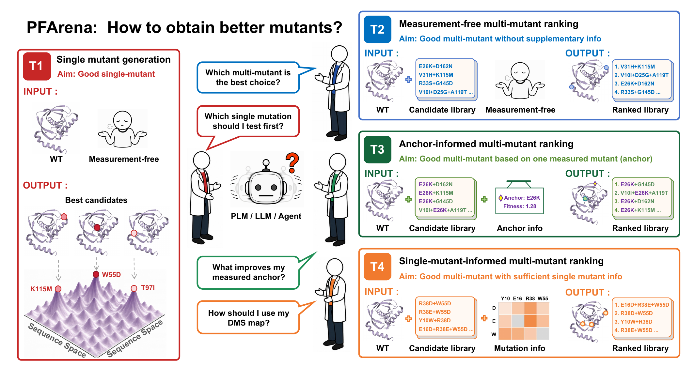
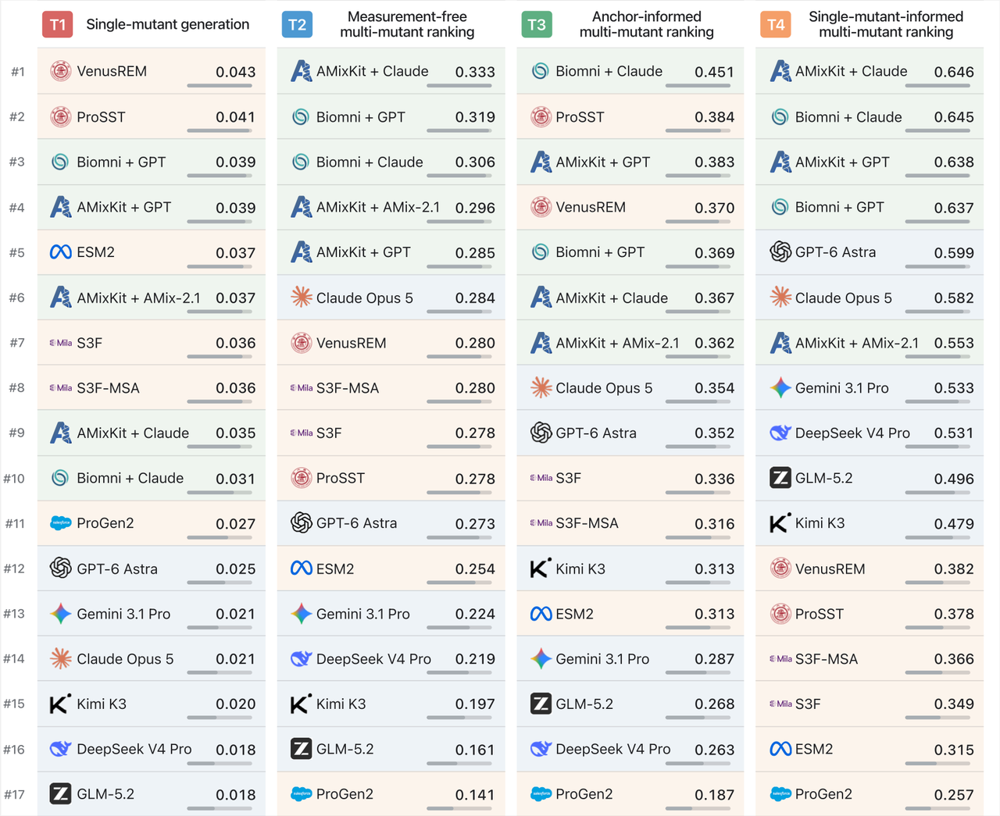
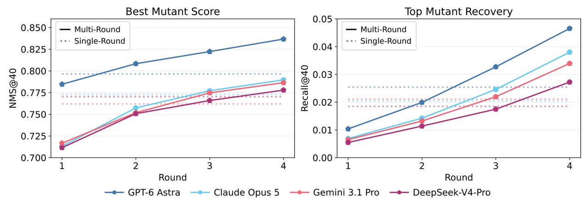
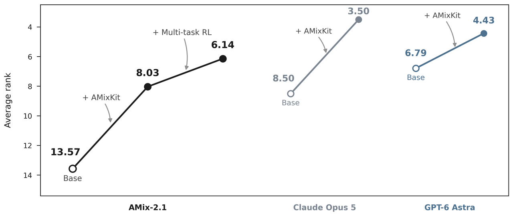

Overview
Protein engineering is driven by realistic experimental decisions: which single-mutants should be tested first when the budget is limited? Which candidates in a group of multi-mutants are most promising? And once an effective mutation or a deep mutational scanning (DMS) landscape is available, how should the next round of experiments be designed?
Rapid advances in general-purpose models such as GPT-6 Astra and Claude Opus 5, alongside protein language models and scientific agents, raise a central question: how well do these systems perform on real protein engineering decisions? Understanding which tasks they handle best, and how far they are from reliably supporting wet-lab scientists requires a systematic evaluation framework.
To address this need, the Shanghai Artificial Intelligence Laboratory, and Tsinghua University's Generative Symbolic Intelligence Laboratory (GenSI), the Institute for AI Industry Research (AIR), and the School of Pharmaceutical Sciences introduce PFArena, a benchmark for reproducible evaluation of frontier language models in protein engineering. PFArena goes beyond scoring predefined mutations: it asks whether models can identify variants worth testing under different levels of experimental information, bringing evaluation under a practical scientific setting.

Four Protein Modification Tasks
PFArena evaluates four representative research scenarios drawn from protein engineering workflows:
T1: Single-mutant generation. Without mutation measurements for the target protein, propose the most promising candidates from the full single-mutant space for experimental testing.
T2: Measurement-free multi-mutant ranking. Rank multi-mutant variants using only the wild-type sequence, the experimental objective, and the candidate library.
T3: Anchor-informed multi-mutant ranking. Given the fitness value of an anchor mutation, identify promising multi-mutant successors in that background.
T4: Single-mutant-informed multi-mutant ranking. Prioritize multi-mutant candidates based on the experimental measurements of the single-mutants in each combination.
By providing varying levels of mutation fitness data, PFArena reflects four representative research scenarios characterized by differing degrees of prior experimental context.
Dataset Construction: 202 assays, over 600,000 candidates
PFArena is built from assay-level protein fitness landscapes originating from ProteinGym, MaveDB, MegaScale, FLAb, Human Domainome, CombinGym, and manually curated target DMS studies.
After standardizing mutation representations, aligning fitness score directions, and applying rigorous quality control, the benchmark comprises 202 unique assays, 293 assay-task instances, and 607,269 target candidate rows. It covers objectives including stability, binding, and activity or organismal function.
The study evaluates 6 protein language models (PLMs), 6 general-purpose large language models (LLMs), and 5 agent configurations built upon Biomni or AMixKit. Evaluation metrics cover four aspects: global ranking, top-weighted ranking, peak discovery, and peak coverage. AMixKit is our lightweight toolkit for protein engineering: it enables LLMs to call specialized protein tools and integrate external information into multi-step, evidence-based analysis.

Diverse Model Strengths
Model strengths depend on the task and the experimental information available. PLMs perform better overall on open-ended single-mutation generation (T1), particularly in covering high-fitness candidates. VenusREM achieves the highest Recall@40, but retrieves, on average, only 4.27% of the true top 40 variants within a budget of 40 candidates. Even leading models therefore struggle to cover the most promising mutations under a limited budget. LLMs and agents become more competitive in multiple-mutation ranking. AMixKit + Claude achieves the highest Spearman correlation in T2 (0.333); Biomni + Claude leads overall ranking in T3 (0.451). In T4, where single-mutation measurements provide the most extensive experimental context, agents are consistently among the leaders, with AMixKit + Claude achieving the highest Spearman correlation (0.646). These results point to complementary strengths: PLMs make effective use of sequence, structural, and evolutionary priors, while LLMs and agents are better able to interpret and combine experimental evidence specific to the target protein.
These distinct strengths come with shared limitations. High-quality candidates become harder to recover as the single-mutation search space grows. In multiple-mutation ranking, all model families generally perform worse on variants carrying more than two mutations. The advantage of LLMs and agents in T4 also relies largely on integrating single-mutation measurements: performance still drops substantially when combinations exhibit strong non-additivity and complex epistasis.
A Closer Look at GPT-6 Astra
Without protein structure and MSA inputs, GPT-6 Astra leads standalone LLMs on 9 of 14 task–metric comparisons and exceeds the best PLM on 6 metrics. Error analysis also shows that GPT-6 Astra and PLMs each correct some of the other's severe ranking errors, indicating complementary capabilities.
GPT-6 Astra also benefits from iterative experimental feedback. With the total candidate budget fixed at 40, replacing a single generation round with four rounds—and providing previously measured outcomes as feedback after each round—increases its normalized maximum score (NMS@40) from 0.7966 to 0.8367 and Recall@40 from 2.54% to 4.65%, ranking first on both metrics among the models evaluated. These findings demonstrate its potential to revise subsequent proposals in response to experimental evidence.

Nevertheless, confidence is not a guarantee of candidate quality. Although GPT-6 Astra's confidence tracks overall ranking performance reasonably well on some tasks, greater confidence does not consistently translate into better choices. Some lower-confidence predictions recover more of the genuinely top-ranked candidates.
Model Preview: AMix-2.1
Despite its strong general reasoning capabilities, GPT-6 Astra may unnecessarily refuse biology-related requests or require repeated prompt adjustments to produce successful outputs. Its API costs can also be substantial at scale. To address these limitations, the team builds on scaling experience from AMix-1 to extend AMix-2 to the hundred-billion-parameter scale, and applies multitask agentic reinforcement learning to further improve performance. AMixKit + AMix-2.1 is competitive across all four tasks, providing a favorable balance between performance and cost. Further technical details and models will be released in future work.

Conclusion
PFArena shifts evaluation from static mutation scoring toward a practical question: what should we test next? It assesses whether models can identify useful candidates under limited budgets, varying levels of experimental information, and complex multi-mutant combinations. As current results are based on retrospective data, hit rates in new experiments still require prospective validation. By offering a reproducible evaluation grounded in laboratory decision-making, PFArena provides a basis for comparing model-assisted protein engineering approaches and developing future closed-loop wet-lab validation. A promising path forward may lie not in finding "one model for all", but in bringing complementary strengths together: PLMs' protein priors, LLM's contextual reasoning, specialized tools, with real experimental feedback.
概述
在蛋白质改造中，研究者面对的核心问题往往不是“这个突变得多少分”，而是更实际的决策：有限的实验预算应该优先测试哪些单点突变？面对一批多点突变体，哪个最值得先做？已有一个有效突变或一张深度突变扫描（DMS）图谱后，如何设计下一轮实验？
随着 GPT-6 Astra、Claude Opus 5等顶尖通用大模型，以及蛋白质语言模型和科学智能体能力快速提升，一个关键问题随之而来：这些前沿模型在真实蛋白质改造场景中究竟表现如何？它们分别擅长哪些决策任务，又距离真正辅助实验科学家还有多远？目前仍缺少一个统一、系统的评测框架来回答这些问题。
针对这一问题，上海人工智能实验室、清华大学生成式符号智能实验室（GenSI）、清华大学智能产业研究院（AIR）及清华大学药学院联合推出 PFArena：面向蛋白质改造的语言模型评测基准。与传统的“给定突变、预测分数”不同，PFArena 以实验科学家的视角组织任务，直接评估模型能否在不同实验信息条件下，找到更值得验证的突变体。其将评测视角延伸至蛋白质改造这一真实科研场景，为前沿模型提供了统一、可复现的比较坐标。
四类任务，紧贴蛋白质改造的实际研究
PFArena围绕蛋白质工程中的四个典型场景设计任务：
任务一（T1）：单点突变生成。没有目标蛋白的突变测量数据时，从完整单突变空间中提出最值得优先实验的候选。
任务二（T2）：无测量信息的多点突变排序。仅依据野生型序列、实验目标和候选库，对多点突变体进行排序。
任务三（T3）：锚点信息驱动的多点突变排序。已测得一个重要突变（锚点）的效应值，判断在此基础上继续加入哪些突变更有希望。
任务四（T4）：单点突变信息驱动的多点突变排序。已知候选组合中各个单点突变的实验结果，进一步预测哪些组合表现最佳。
这四项任务覆盖了从“零实验信息”到“拥有较充分目标特异性数据”的完整过程，对应实验室中常见的实验流程中的不同阶段。
202个真实实验，超过60万条候选记录
PFArena 基于真实实验测定的蛋白质适应度景观构建，汇集 ProteinGym、MaveDB、MegaScale、FLAb、Human Domainome、CombinGym 及人工整理的 DMS 研究。
经过统一突变表示、实验分数方向校准和严格质量控制，基准最终包含202个独立实验（assays），293个任务实例，共607,269条目标候选记录，覆盖稳定性、结合、活性及细胞或个体功能等研究目标。
研究团队系统评估了6种蛋白质语言模型（PLM）、6种通用大语言模型（LLM），以及基于 Biomni 和 AMixKit 构建的5种智能体组合，并从整体排序、头部排序、最佳候选发现和高适应度候选覆盖等维度进行评测。其中，AMixKit 是团队开发的针对蛋白改造的轻量工具集，帮助大语言模型调用蛋白质专业工具并整合外部信息，从而实现多步骤、有依据的推理分析。
没有“全能模型”，实验信息决定模型优势
评测显示，不同模型家族各有所长，其相对优势随任务要求和可用实验信息变化。在开放式单点突变生成任务 T1 中，PLM 整体表现更强，尤其擅长覆盖高适应度候选。VenusREM 取得最高的召回率（Recall@40，即在候选预算为 40 的条件下计算），但平均也仅找回真实 Top-40 突变的4.27%，说明在有限候选预算下，即使是领先模型，也难以充分覆盖最值得测试的突变。在多点突变排序任务中，LLM 与智能体的优势逐渐显现。T2 中，AMixKit + Claude 取得最高 Spearman 相关系数0.333；T3 中，Biomni + Claude 以0.451领先整体排序；在单点实验信息最充分的 T4 中，智能体全面进入领先区间，AMixKit + Claude 取得最高 Spearman 相关系数0.646。这些结果揭示了一条清晰规律：PLM 更擅长利用蛋白质自身的序列、结构和进化先验；LLM 与智能体则更擅长读取、整合并推理目标特异性的实验信息。
不同的优势背后，是共同的瓶颈。随着单点搜索空间扩大，优质候选更难覆盖；在多点排序中，各模型家族对含两个以上突变的候选整体表现更差。此外，LLM 和智能体在 T4 中的优势，也主要来自对单点突变信息的有效整合：当多点组合存在明显非加性和复杂上位性效应时，其性能仍会大幅下降。
GPT-6 Astra走到哪一步了？
在14个评测指标中，GPT-6 Astra 有9项位列独立 LLM 第一，6项超过对应指标的最佳 PLM，而其输入并不包含蛋白质结构与多序列比对（MSA）信息。错误分析进一步表明，GPT-6 Astra 与 PLM 各自能够纠正对方的一部分严重排序错误，体现出互补性，而非简单的替代关系。
GPT-6 Astra 能够持续利用实验反馈改善候选设计。在总候选预算固定为40的条件下，将一次性生成改为四轮迭代，并逐轮提供已有实验测量作为反馈后，其归一化最高分（NMS@40）从0.7966提升至0.8367，Recall@40 从2.54%提升至4.65%，两项指标均位列该多轮实验的参评模型第一。这展示了其根据实验反馈调整后续提案、参与迭代优化的潜力。
GPT-6 Astra 的自报置信度尚不足以可靠判断优先候选的选择质量。尽管置信度在部分任务中能够较好地反映整体排序表现，模型更有把握的预测并不总能带来更好的候选选择结果，一些置信度较低的预测反而找回了更多真正排名靠前的候选。
书生 AMix-2.1 模型预览
尽管 GPT-6 Astra 展现出强大的通用推理能力，但在生物学相关任务中仍可能出现过度拒答或误拒答，或需要用户反复调整提示才能获得有效输出；此外，在大规模应用场景下，其 API 成本也可能较为高昂。针对这些局限性，团队基于在书生 AMix-1 上积累的 scaling 经验，将书生 AMix-2 扩展至百B参数规模，并进一步引入多任务智能体强化学习，以持续提升模型表现。评测结果显示，AMixKit + AMix-2.1 在四项任务上均展现出较强竞争力，体现了兼顾性能与成本的潜力。更多技术细节与模型权重将在后续工作中发布。
总结
总结来看，PFArena将评测重点从静态的突变打分，推进到“下一步应该测试什么”的实验决策。它不仅比较模型分数，更关注模型能否在有限预算、不同信息条件和复杂突变组合下，为真实蛋白质改造提供有价值的候选。当前结果基于回顾性数据，其在新实验中的实际命中率仍需进一步验证。但通过统一、可复现且贴近实际研究流程的评测，PFArena为模型辅助蛋白质改造建立了新的比较坐标，也为未来闭环湿实验验证奠定了基础。未来更有潜力的方向可能不是寻找单一“万能模型”，而是把 PLM 的蛋白质先验、LLM 的上下文推理、专业工具与真实实验反馈更紧密地结合起来。